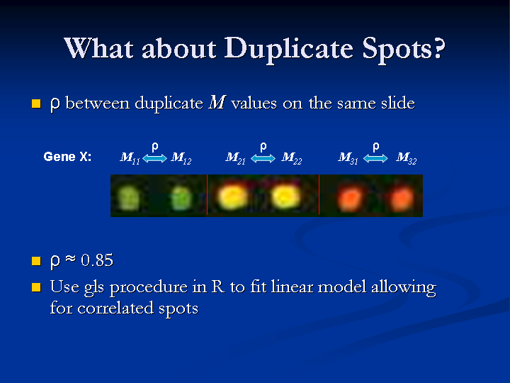

Identifying Differentially Expressed Genes in Designed Microarray Experiments
Gordon Smyth Walter and Eliza Hall Institute
DNA Microarrays in Biology and Medicine 13 September 2002, Lausanne
previous slide - Slide 35 - next slide
